A microservice journey
Legacy monolith
Homepage application

homepage, newsfeed, user-info
Microservice architecture
homepage
newsfeed 
user-info
- Circuit breaking
- Tracing
- Canary deployments
- Security
- Load balancing
- Metrics
homepage
hystrix
spring-cloud
«custom»
spring-security
k8s (basic)
spring-boot-actuator
newsfeed
crius
opentracing-rust
«custom»
rust-tls-api
k8s (basic)
rust-metrics
user-info
hystrixjs
opentracing-javascript
«custom»
https library
k8s (basic)
appmetrics
Istio
“An open platform to connect, manage, and secure microservices”
istio.ioIstio
Capabilities
- Traffic management
- Observability
- Policy enforcement
- Service identity and security
Extensibility
- Platform support
- Integration and customization